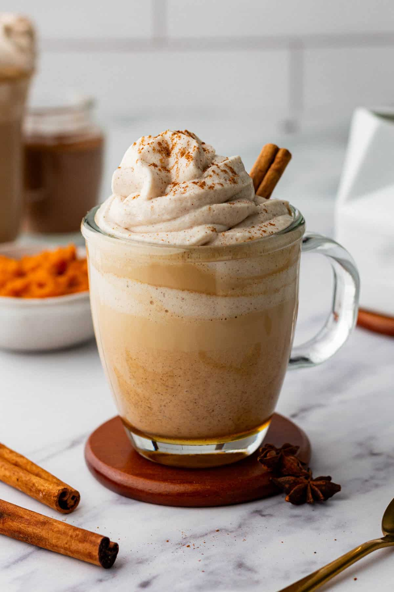

Pumpkin Spice Latte
A pumpkin spice latte is a popular autumn drink combining coffee, milk, pumpkin puree and warming spices.
Preparation time: 20 minutes
Cooking time: 5 minutes
Servings: 1 cup
Ingredients
- 1 shot of espresso or 60 ml strong coffee
- 240 ml milk
- 2 tablespoons pumpkin puree
- 1–2 tablespoons sugar or maple syrup
- 1/2 teaspoon cinnamon
- A pinch of ground ginger
- A pinch of ground nutmeg
- 1/4 teaspoon vanilla extract (optional)
- Whipped cream (optional)
Method
- Brew one shot of espresso or prepare 60 ml of strong coffee.
- Combine the milk, pumpkin puree, sugar, cinnamon, ginger and nutmeg in a saucepan.
- Heat gently over medium-low heat, stirring continuously. Do not boil.
- Remove from the heat and add vanilla extract if desired.
- Froth the warm milk mixture using a milk frother or whisk.
- Pour the coffee into a large mug.
- Add the warm pumpkin-spiced milk and stir gently.
- Top with whipped cream and cinnamon if desired.
